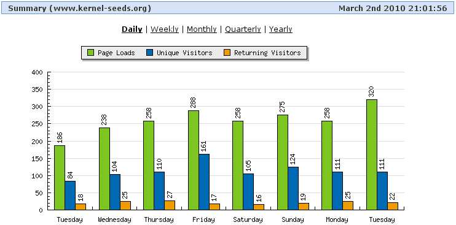
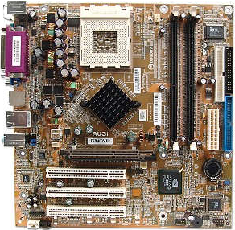
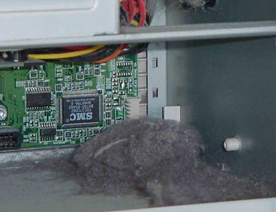

When I first put up this site, I had no idea that it would go anywhere. I figured it was cool, but who would care about a pre-made kernel .config file? Who would want to spend any amount of time at a site of that nature?
Apparently, many. Since I track my daily numbers, I can say that while kernel-seeds.org doesn't score as many hits as Yahoo or Google, I get steady daily traffic. Some days are better than others, especially days that see the release of three or more different versions of kernel source code. Whatever the reason, kernel-seeds.org gets peoples' attention. That's a good thing.

At some time in the past, I had people tell me they thought it was a good idea, and they would donate to the site. With that in mind, I put up the previous donation page with the hope that those people were being honest about their desire to donate to the site. As of this point in time, the button remains un-clicked. Well, there was that time I clicked it to make sure that everything was right on PayPal's end, which it was. Must be some sort of issue with the mice that come here to visit.
UPDATE! The button has been clicked, and it does work! I still have my doubts about the visiting mice nonetheless.
I know the button works. What else could be the problem? Is the page too boring? Am I doing too much of a soft sell when I should press a little harder? How about the economy?
I know money's too tight to mention. I know that well. I also know a web site can't run itself. I put daily work into keeping the site going. A recent paying gig meant an update to the server which used to run this complete site. Chu-Ching!
The page you are currently reading is being served from an HP Pavilion a320n with an FIC AU31 motherboard, and an AMD Athlon XP 2800. Had it not been for a neighbor giving me the machine, and my friend Geoffrey's old laptop getting a seriously nasty virus which netted me some bucks to repair (see above Chu-Ching!), this site would still be being served from a Gateway P-III with a Windows ME license sticker.

I know times are tough. This site is well maintained because it's my only job at the moment. That increases my need for donations. No one knows better than I the spooky state of the economy.
So, I had an idea. I'm sure everyone's got an old mobo, hard drive, full machine, or other computer bits and pieces just sitting around, collecting dust. If you wish to donate hardware, excepting CRT monitors or CDROM drives (DVD OK), I'm all for that. At the moment, I'm especially interested in getting a hold of a recent Mac laptop of the PPC variety so I can start working with setting up PPC kernels. Intel-based Mac lappies are fine as well if you have an old one not doing anything but sheltering ancient dust bunnies.

I know, that's not a Mac, or a laptop. Still, you have to admit...that's one serious dust bunny.
What will you get for your donation? My undying respect and love, and a place on my upcoming page of the "Above and Beyond"; a special page to highlight the people who have assisted by putting time and effort into making kernel-seeds.org a reality.
Let me say that again, barter is very valid as far as I'm concerned. While money would mean I could move to an outside server or get better Internet service, hardware would assure I'd never run out of computers to use as web servers. It's a win-win. You get rid of junk, I get more junk so I can make sure that this site remains up and running. Site stays up and running, more people use Linux and see it as a stable alternative to Windows instead of a total mess. That's good no matter how you look at it. Why, it's almost worth celebrating with fireworks!!!
So, don't be afraid, and don't let your Pappy down. Donate today. Click that button! It may be small, and un-centered, but it does work. Send that email requesting my snail-mail address. Help kernel-seeds.org continue to provide Linux users with stable kernel .configs, one of a kind kernel information, and so much more.
Cheers!
Pappy